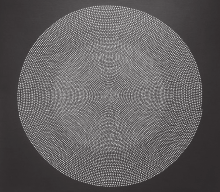

|

|
|
Michelle Grabner
Artist Statement
It is as though beautiful things have been placed here and there throughout the world to serve as small wake-up calls to perception, spurring lapsed alertness back to its most acute level. Through its beauty, the world continually recommits us to a rigorous standard of perceptual care: if we do not search it out, it comes and finds us.
The metaphysical plane behind the face or song provided the moral urgency for insisting upon this movement away from the particular to the distributional (or as it was called then, in a word that is often berated, the universal).
Elaine Scarry, On Beauty and Being Just
The early abstract paintings derive from identifying, indexing and tracing patterns that were the backdrop to my domestic sphere. These patterns--ranging from the complex to the simple--represented order and limitation amongst the banalities and turbulence of everyday life.
These works were based on particular materials such as washcloths, blankets and window screens. As in Scarry's quote, the work evolved away from the particular toward the universal. Although the process of employing found material as a template continued, the material--a simple cotton weave blanket--now provided only a roving grid pattern that did not reveal itself as a specific item. Local color evidenced in the previous bodies of work gave way to full spectrum bands of radiating pastel color, again making a shift toward Scarry's "distributional." This relationship to beauty is also underscored in Plato's requirement that we move from eros to caritas, from the interest in the beauty of one person toward the beauty of all. "Being good, bearing knowledge and acting fairly" are classical virtues I would like to reinvestigate via abstraction within the contemporary discourse of painting. I am most concerned with metaphorically conveying beauty as compassionate and good-hearted, that which is very distinct from the sublime.
The most recent "black ground" works move even further toward the universal. By employing points of medium, Archimedes spirals, and black and white gesso, I have reduced the paintings down to a rudimentary vocabulary that expounds on the distributional, revealing not just fields but an abstract figure that through rotation expands progressively outward. Individual points give way to the whole, an abstract promise of something greater than the individual.
About the Artist
Artist and writer Michelle Grabner (Chicago) has exhibited nationally and internationally and published in Xtra, ArtUS, Artext,Frieze, Art Press, Cakewalk and Teme Celeste. Recent solo exhibitions include Rocket Gallery, London; University Galleries, Illinois State University; Gallery 16, San Francisco; and PS, Amsterdam. She participated in Post Hypnotic, a group exhibition that originated at University Galleries, Illinois State University, and traveled widely between 1999 and 2001. Grabner received her B.F.A. and M.A. from the University of Wisconsin-Milwaukee and her M.F.A. from Northwestern University. Currently associate professor of painting and drawing at the School of the Art Institute of Chicago, Grabner co-directs The Suburban in Oak Park, Illinois. Grabner is represented by Shane Campbell Gallery, Chicago and Rocket Gallery, London. This is her second Inova exhibition.
Checklist
All works:
Untitled
2006 or 2007
lashe and gesso on canvas
tondo, 8"-70" in diameter
|
|